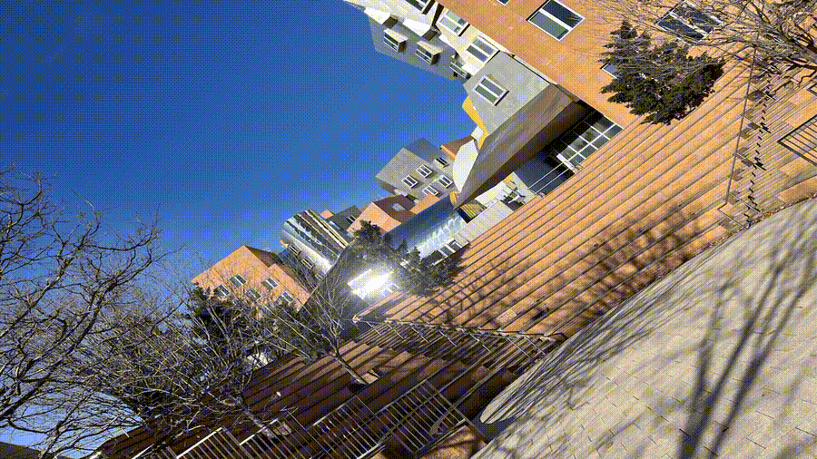
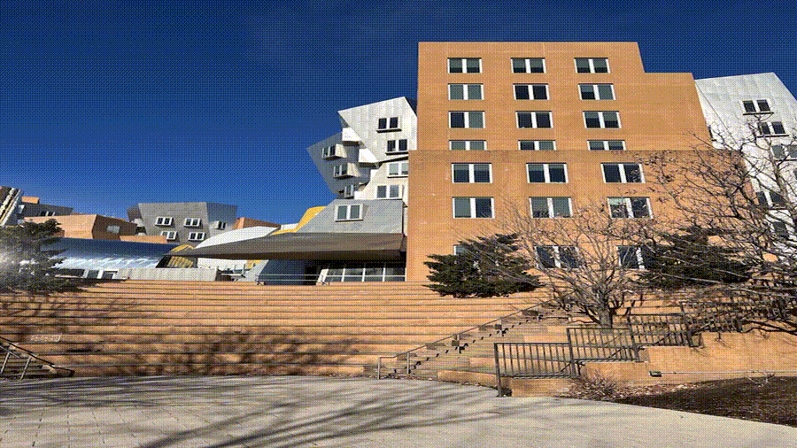
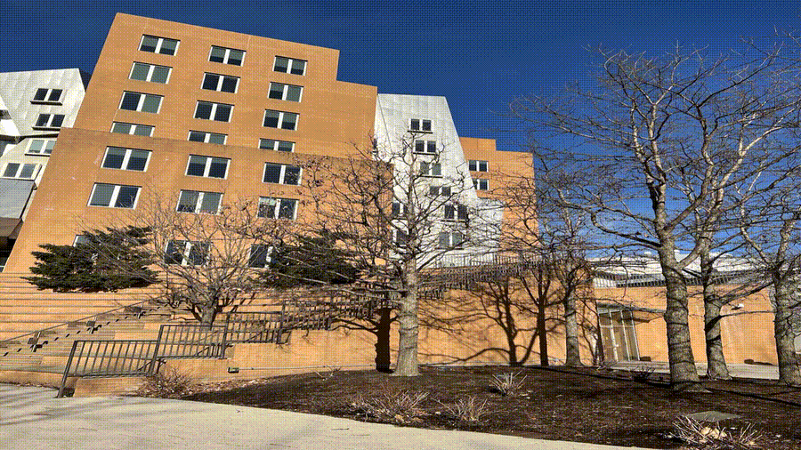
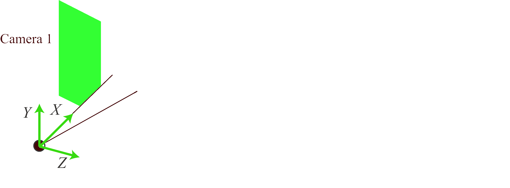
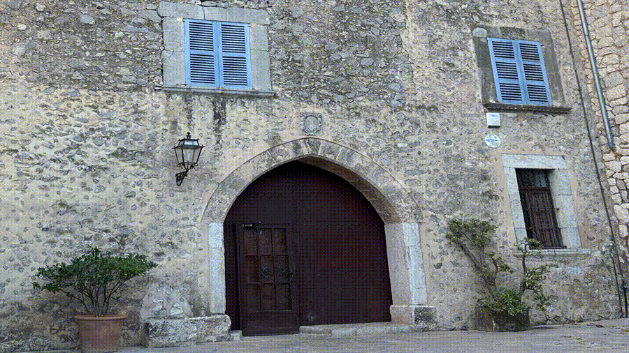
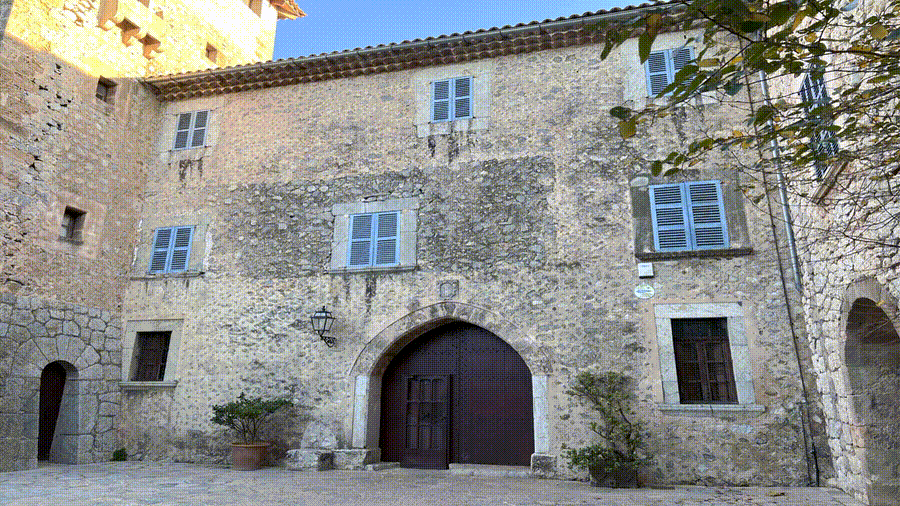
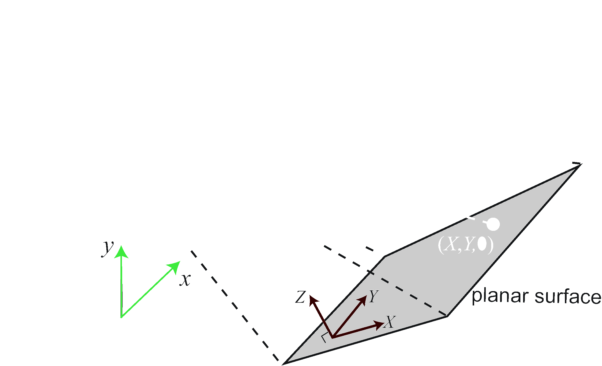
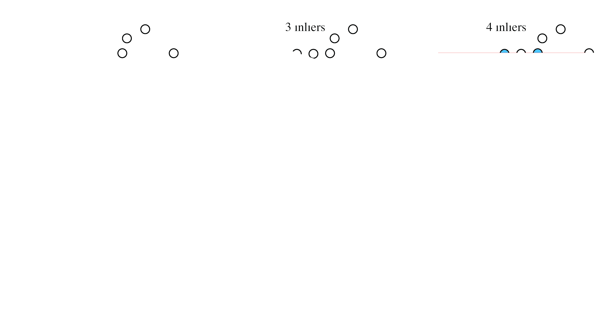
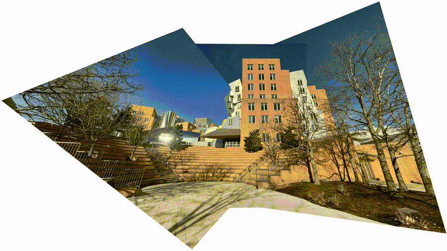

Homographies
Geometric Image Transformations and Applications
Introduction
What Are We Learning Today?
- What is a homography?
- When do homographies occur in real scenes?
- How to estimate homographies from image correspondences
- Practical applications: panorama stitching and beyond
The Big Picture
Homographies are simple 2D transformations that relate images when:
- Two cameras differ only by rotation (same center of projection)
- Observing a planar surface
No knowledge of 3D structure needed!
What is a Homography?
Definition
A homography (or projective transformation) preserves straight lines:
- If points \(\mathbf{p}_1\), \(\mathbf{p}_2\), \(\mathbf{p}_3\) are collinear
- Then \(h(\mathbf{p}_1)\), \(h(\mathbf{p}_2)\), \(h(\mathbf{p}_3)\) are also collinear
Matrix Form
In homogeneous coordinates:
\[\begin{bmatrix} x' \\ y' \\ w' \end{bmatrix} = \begin{bmatrix} a & b & c \\ d & e & f \\ g & h & i \end{bmatrix} \begin{bmatrix} x \\ y \\ 1 \end{bmatrix}\]
Or simply: \[\mathbf{p}' = \mathbf{H} \mathbf{p}\]
Key Properties
- Angles are NOT preserved
- Lengths are NOT preserved
- Parallel lines may NOT remain parallel
- But collinearity is always preserved
Visual Example
When Do Homographies Occur?
Scenario 1: Camera Rotation



Three images from rotating a camera in place
Camera Rotation: Geometry

Camera Rotation: Math
For a 3D point \(\mathbf{P}\) in the world:
Camera 1 (reference): \[\lambda_1 \begin{bmatrix} x \\ y \\ 1 \end{bmatrix} = \mathbf{K} \begin{bmatrix} \mathbf{I} & \mathbf{0} \end{bmatrix} \begin{bmatrix} X \\ Y \\ Z \\ 1 \end{bmatrix}\]
Camera 2 (rotated): \[\lambda_2 \begin{bmatrix} x' \\ y' \\ 1 \end{bmatrix} = \mathbf{K} \begin{bmatrix} \mathbf{R} & \mathbf{0} \end{bmatrix} \begin{bmatrix} X \\ Y \\ Z \\ 1 \end{bmatrix}\]
Camera Rotation: Result
Combining the two equations:
\[\lambda \begin{bmatrix} x' \\ y' \\ 1 \end{bmatrix} = \mathbf{K} \mathbf{R} \mathbf{K}^{-1} \begin{bmatrix} x \\ y \\ 1 \end{bmatrix}\]
\[\mathbf{H} = \mathbf{K} \mathbf{R} \mathbf{K}^{-1}\]
Translation is zero — rotation only!
Scenario 2: Planar Surfaces


Two views of a building facade — coordinates on the plane are related by a homography
Planar Surface: Geometry

Place the plane at \(Z = 0\) in world coordinates
Planar Surface: Math
Project a 3D point with \(Z = 0\):
\[\lambda \begin{bmatrix} x \\ y \\ 1 \end{bmatrix} = \mathbf{K} \begin{bmatrix} \mathbf{c}_1 & \mathbf{c}_2 & \mathbf{t} \end{bmatrix} \begin{bmatrix} X \\ Y \\ 1 \end{bmatrix}\]
This is a product of two \(3 \times 3\) matrices:
\[\lambda \begin{bmatrix} x \\ y \\ 1 \end{bmatrix} = \mathbf{H} \begin{bmatrix} X \\ Y \\ 1 \end{bmatrix}\]
No need to know \(Z\) coordinates!
Homography Estimation
Point Correspondences

Direct Linear Transform (DLT)
Given \(N\) corresponding point pairs, solve:
\[\mathbf{A} \mathbf{h} = \mathbf{0}\]
- \(\mathbf{A}\) is a \(2N \times 9\) matrix
- \(\mathbf{h}\) contains the 9 elements of \(\mathbf{H}\)
- Need at least 4 correspondences (8 DOF)
DLT Solution
The solution is the eigenvector of \(\mathbf{A}^T\mathbf{A}\) with the smallest eigenvalue
In practice: - Initialize with DLT - Refine by minimizing reprojection error
Robust Fitting: RANSAC
Problem: Feature matching can be noisy
Solution: Random Sampling with Consensus
RANSAC Algorithm
- Randomly select 4 point correspondences
- Estimate homography \(\mathbf{H}\)
- Count inliers (points fitting the model)
- Repeat \(k\) times
- Select model with most inliers
RANSAC Example

How Many Iterations?
If \(w\) = probability a point is an inlier:
\[k = \frac{\log(1-p)}{\log(1-w^n)}\]
Example: \(w = 0.18\), \(n = 2\), \(p = 0.95\): \[k = \frac{\log(0.05)}{\log(1-0.18^2)} = 91 \text{ iterations}\]
Application: Image Panoramas
Creating Panoramas
Goal: Stitch overlapping images into one large image
Method: 1. Find correspondences between adjacent images 2. Estimate homography for each pair 3. Use RANSAC for robustness 4. Warp all images to reference frame
Example Panorama

Created from the three overlapping images using estimated homographies
Summary
Key Takeaways
- Homographies relate images when cameras rotate or viewing planar surfaces
- A \(3 \times 3\) matrix completely describes the transformation
- Need only 4 point correspondences to estimate
- Use RANSAC for robust estimation with noisy data
- Enables panorama stitching and many other applications
Beyond Panoramas
Homographies also enable:
- Perspective correction
- Augmented reality
- Bird’s-eye views
- Keystone distortion correction
- And much more!